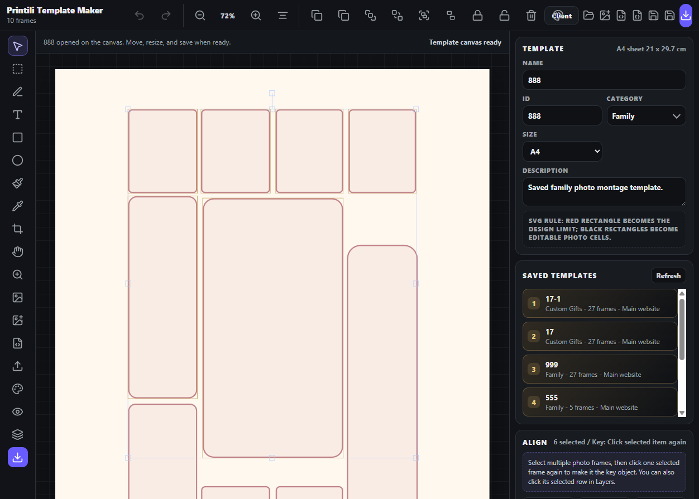

Design Research: Printili Template Editor UX
Printili is moving in the right direction by combining extractor, maker, public catalog, and admin controls. The biggest gap against leading tools is guided confidence: smart auto-layout, visible quality checks, stronger customer preview, and a clearer production handoff.
Current State

The Template Maker now has a precision Align panel with key-object selection, spacing, and match-size tools, plus a safer layer-list way to pick the key frame.
Next Recommendations
- Add customer-side smart crop and face-aware fit before checkout.
- Add template quality scoring: low-resolution, empty slot, bleed, and safe-margin warnings.
- Add auto-layout assist that suggests or generates a balanced layout from uploaded photos.
- Add public filters for occasion, photo count, format, price, and delivery type.
- Add side-by-side customer preview: screen preview plus print-safe PDF preview.
- Add template version history and duplicate-as-new in Template Maker.
- Add undo/redo history to Template Maker before more destructive editing tools.
- Add production dashboard states from paid to delivered.
- Add social proof: reviews, real examples, delivery guarantees, and quality materials.
- Add guided mobile upload flow with progress, reorder, crop status, and missing-photo reminders.